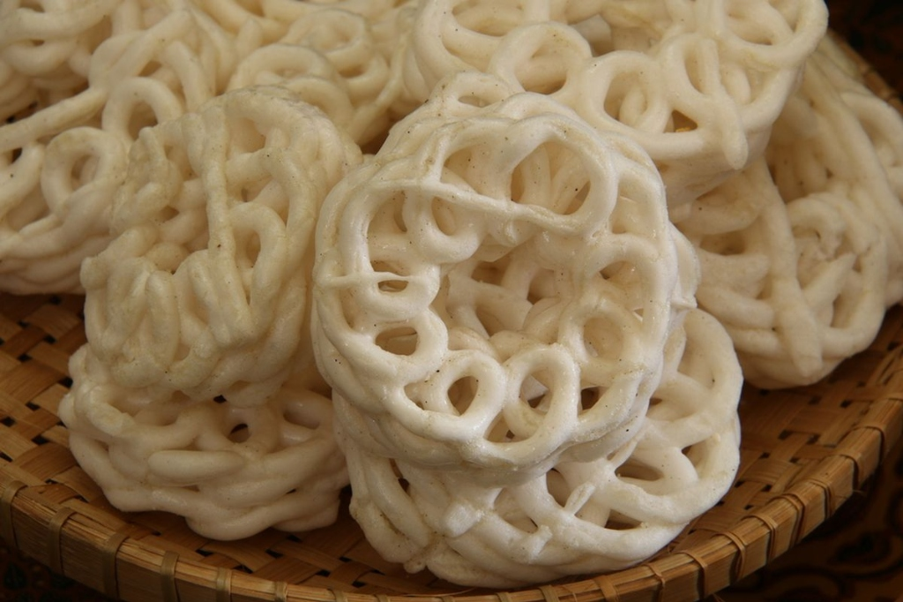

Kerupuk putih gurih, renyah mekar, dan higienis. Tersedia ukuran besar dan kecil, bisa dipesan dalam kondisi mentah maupun matang untuk santapan keluarga, warung makan, maupun katering.

Mekar sempurna, renyah, dan gurih pas di setiap gigitan.
Tersedia dalam 2 pilihan ukuran dengan opsi Matang (Siap Santap) maupun Mentah (Siap Goreng).
Kerupuk putih ukuran besar dengan bentuk ukel mawar klasik. Mekar lebar, renyah garing, dan gurih sedap. Sangat cocok untuk sajian warung, rumah makan, katering, maupun stok camilan keluarga.
Kerupuk putih ukuran mini/kecil yang pas sekali suap. Tekstur renyah ringan dan gurih renyah, sangat digemari anak-anak dan cocok untuk pelengkap bubur, soto, gado-gado, dan nasi goreng.
Kami melayani pembelian eceran, bal besar, maupun karungan untuk kebutuhan warung, pesta, dan katering.
Kami mengutamakan kebersihan, kerenyahan, dan rasa gurih alami yang pas di lidah.
Diproduksi dengan proses yang bersih dan bahan pilihan yang aman dikonsumsi seluruh keluarga.
Untuk varian matang, digoreng dengan minyak bermutu sehingga tidak bau tengik dan tidak seret di leher.
Pengeringan optimal membuat kerupuk mentah mekar maksimal saat digoreng dan renyahnya tahan lama.
Siap melayani pesanan eceran, warung, rumah makan, katering, hingga kemitraan reseller.
Punya warung makan, resto, usaha katering, atau ingin menjual kembali kerupuk di daerah Anda? Kami siap menyuplai kerupuk putih berkualitas dalam bentuk matang siap santap maupun mentah siap goreng dengan harga grosir yang ramah di kantong.
Klik tombol di bawah atau kirim pesan langsung dengan format:
Nama: [Nama Anda]
Ukuran: Besar / Kecil
Kondisi: Matang / Mentah
Jumlah: [Contoh: 5 Bal / 10 Bungkus]
Alamat Pengiriman: [Kota / Alamat]
Untuk Anda yang membeli kerupuk versi mentah: